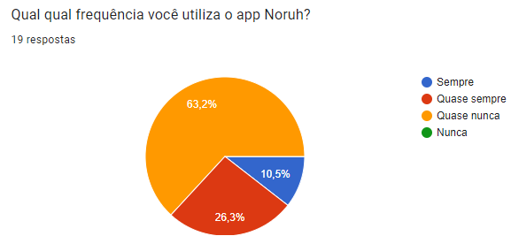
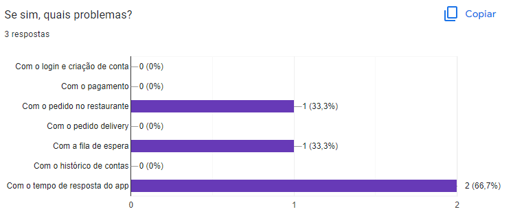
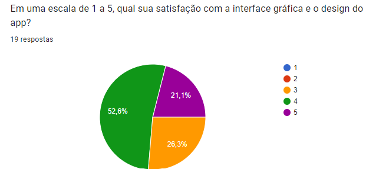

Questionário
1. Introdução
Para a técnica de elicitação de questionário, utilizamos o google forms e fizemos um questionário com algumas perguntas sobre o aplicativo para as pessoas questionadas sobre o assunto, que enviamos via whatsapp pedindo as respostas de quem pudesse nos ajudar nessa pesquisa.
2. Metodologia
Utilizamos o questionário feito pelo Google Forms, e os enviamos para as pessoas através do whatsapp, e esperamos por dois dias para fazer a análise, e conseguimos 25 respostas, talvez pelo aplicativo não ser muito conhecido.
3. Questões
Questão 1

Para iniciarmos o questionário, perguntamos ao usuário se ele já havia usado alguma vez o app Noruh. Para que dessa forma, pudessemos filtrar as repostas de usuários que nunca tiveram contato com app, direcionando-os ao fim do questionário após coletarmos sua idade.
Questão 2

Na segunda pergunta tinhamos como objetivo saber qual a idade dos usuários. E com ela, pudemos confirmar que o app é mais popular entre jovens de 18 a 22 anos.
Questão 3

Com a terceira questão, filtramos requisitos de grande importância para os usuários, que fizeram com que eles usassem o app. Dessa maneira, concluímos que a facilidade em fazer pedidos e realizar pagamentos se destacaram entre os clientes.
Questão 4
 Nessa quarta questão, buscamos descobrir a frequência que os usuários utilizam o Noruh, e descobrimos que a maioria quase nunca usa
Questão 5
 Com a quinta questão, buscamos encontrar o grau de importância de algumas das funcionalidades para os usuários do app. Com isso, as funcionalidades de fazer o pedido na mesa, fazer pagamento pelo app e pedir a conta física pelo app se mostraram como as mais importantes nas visões dos usuários
Com a quinta questão, buscamos encontrar o grau de importância de algumas das funcionalidades para os usuários do app. Com isso, as funcionalidades de fazer o pedido na mesa, fazer pagamento pelo app e pedir a conta física pelo app se mostraram como as mais importantes nas visões dos usuários
Questão 6
 Nessa sexta questão buscamos descobrir qual o grau de experiência do usuário com o aplicativo, e descobrimos que a maioria diz que é satisfatória.
Nessa sexta questão buscamos descobrir qual o grau de experiência do usuário com o aplicativo, e descobrimos que a maioria diz que é satisfatória.
Questão 7

Nessa sétima questão tinhamos o objetivo de descobrir se o usuário já teve algum problema com o aplicativo, e a maioria diz que não.
Questão 8

Nessa oitava questão, buscamos que o usuário nos informe qual foi o problema que ele teve com o aplicativo, e descobrimos que o mais informado foi o tempo de resposta do aplicativo.
Questão 9

Por fim decidimos analisar o grau de satisfação do usuário com a interface gráfica do aplicativo.
4. Resultado
Com a análise desse questionário, podemos ver que as pessoas entrevistadas tiveram um alto grau de satisfação com o app, com poucos problemas, porém podemos analisar também, que o aplicativo não é muito conhecido pelas pessoas, pelo baixo número de resultados, e que ele tem potencial para alcançar muitas pessoas pelas suas funcionalidades.
Histórico de Versão
| Versão | Alteração | Responsável | Revisor | Data |
|---|---|---|---|---|
| 1.0 | - | João Henrique, Lucas | Todos | 11/07 |
Referências
- BARBOSA, Simone; SILVA, Bruno. Interação Humano Computador. Rio de Janeiro. Elsevier Editora Ltda. 2010